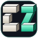
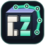
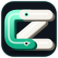

1
Blöcke
CZ aus wenigen isometrischen 3D-Blöcken. C hell, Z mint.

CryptoZürich
powered by 0xnode
32 px
16 px
16 px, 4×
CryptoZürich
Jedes Zeichen enthält CZ, wirkt wie eine Blockchain und hat Tiefe. Die kleinen Kacheln sind die echten Favicon-Grössen.
CZ aus wenigen isometrischen 3D-Blöcken. C hell, Z mint.

CZ auf der Front eines Blocks. Nodes laufen als Kette über die Kanten.

C und Z als zwei 3D-Kettenglieder, die ineinander greifen.
